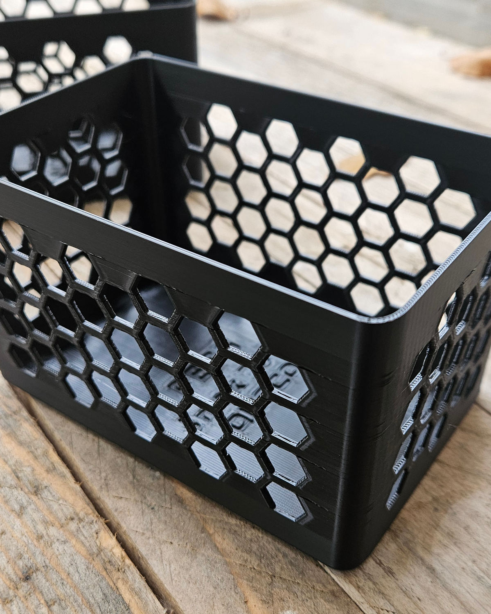
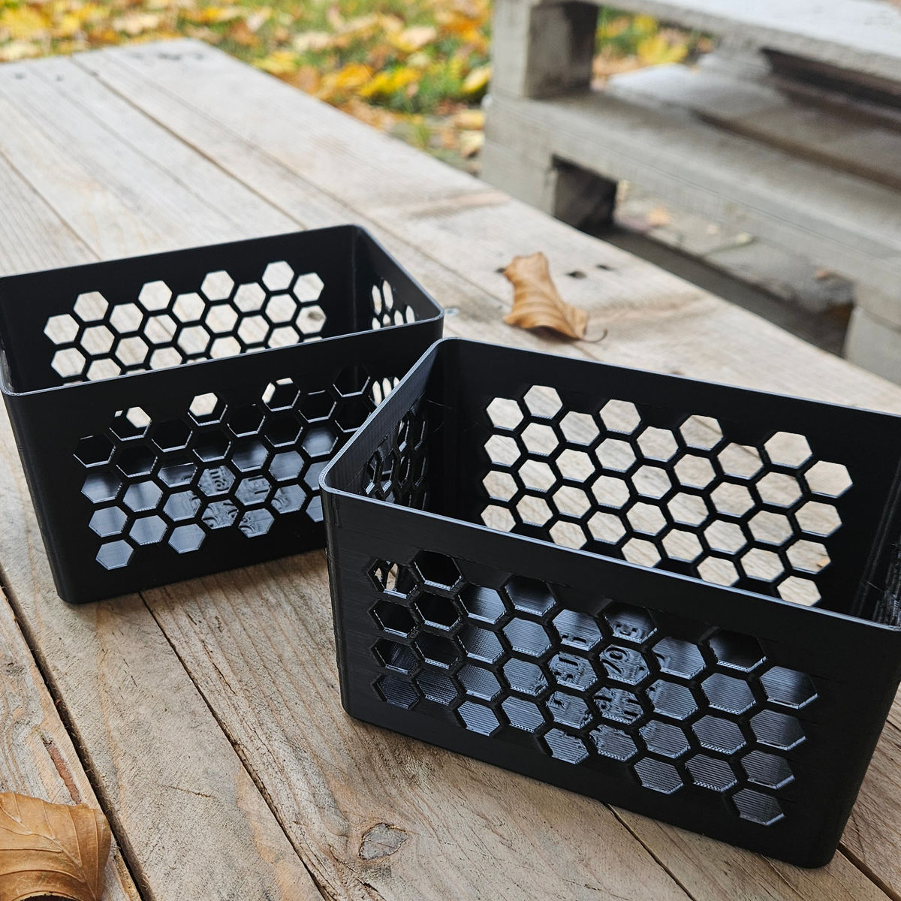
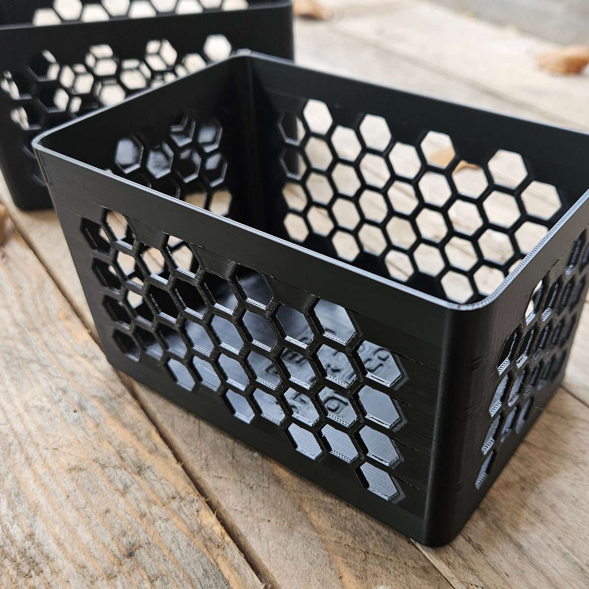
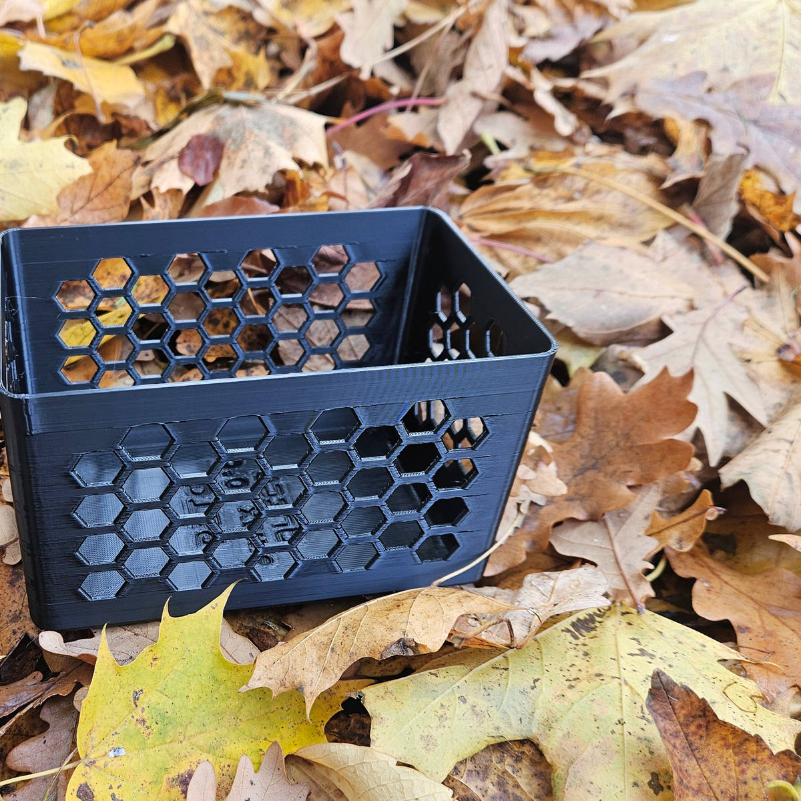

Dopasowana szerokość
Szerokość 87 mm odpowiada wnętrzu kosza cargo 15 cm. Pudełko nie przesuwa się na boki, a trzy sztuki obok siebie zajmują 405 mm. Starsze modele 100 mm i 89 mm do tego kosza nie pasują i nie są w ofercie.
Queco · Boxy Cargo
Linia Queco
Organizery Queco z linii Boxy Cargo mają obrys 87 × 135 × 80 mm i są drukowane z czarnego PETG. Zaprojektowano je pod wąski, wysuwany kosz cargo 15 cm (m.in. Delinia z Leroy Merlin). Saszetki stoją pionowo i nie przewracają się przy wysuwaniu. Dwa warianty: zwykły (ażur w plaster miodu) oraz na przyprawy (2 przegródki). Komplet trzech pudełek wypełnia jedną półkę.

Szerokość 87 mm odpowiada wnętrzu kosza cargo 15 cm. Pudełko nie przesuwa się na boki, a trzy sztuki obok siebie zajmują 405 mm. Starsze modele 100 mm i 89 mm do tego kosza nie pasują i nie są w ofercie.
Otwory w kształcie plastra miodu pozwalają zobaczyć zawartość, a okruchy i woda nie zalegają na dnie. Wariant zwykły waży 71,9 g (masa bryły; slicer zwykle pokazuje o 2–5% więcej).
Zaokrąglone narożniki wewnątrz ułatwiają czyszczenie. Myć ręcznie w letniej wodzie. PETG jest odporny na wilgoć i środki czystości, do ok. 70 °C. Nie myć w zmywarce.
Oba warianty mają te same wymiary zewnętrzne 87 × 135 × 80 mm i powstają z czarnego PETG w technologii druku 3D. Na ściankach widać delikatne linie warstw — to cecha tej technologii, a nie wada. Górna krawędź jest prosta, bez wycięcia na palec.
| Wymiary | 87 × 135 × 80 mm (szer. × dł. × wys.) |
|---|---|
| Na półkę | komplet 3 szt., 405 mm długości |
| Materiał | Czarny PETG, do ok. 70 °C (oznaczenie na dnie: PETG / max 70 °C) |
| Oznaczenie | Na dnie: materiał, maks. temperatura i napis QUECO |
| Masa (bryła) | zwykły 71,9 g; przyprawy 109,4 g |
| Produkcja | druk 3D na zamówienie, Kołobrzeg |
Jedna komora, ażurowe ścianki. Na słoiczki, butelki, saszetki i chemię w opakowaniach.
Dwie wzdłużne przegródki, czyli trzy komory. Saszetki stoją grzbietem do góry, nazwy widać po wysunięciu kosza.
Ceny mogą ulec zmianie. Aktualna cena i koszt wysyłki są podane w ofercie na Allegro.
Ważne: pudełko nie posiada certyfikatu do kontaktu z żywnością. Przeznaczone jest do produktów w opakowaniach: saszetek, słoiczków, butelek i puszek. Nie należy myć go w zmywarce ani ustawiać w pobliżu piekarnika lub płyty grzewczej.



Każdy obsługiwany kosz ma kod w formacie SKLEP-numer kosza-długość, podany w tytule oferty. Przykład: LM-80053050-135 oznacza Leroy Merlin, kosz nr 80053050, pudełko 135 mm.
| Sklep | Kosz cargo 15 cm | Kod Queco | Na półkę |
|---|---|---|---|
| Leroy Merlin | Delinia iD, kosz cargo boczny 15 cm | LM-80053050-135 |
2 szt. (półka jest płytka, zmierz głębokość) |
| Leroy Merlin | Delinia iD, kosz cargo dolny 15 cm | LM-…-135 |
3 szt. |
| Castorama | GoodHome Pebre 150 mm | CA-3663602480143-135 |
3 szt. (wchodzą na styk) |
| OBI | Rejs Cargo dolne ELEMENT mini 15 cm (grafit / biały) | OBI-2191182749028-135OBI-2191182749097-135 |
3 szt. |
Przed zakupem warto zmierzyć półkę od wewnątrz. W najwęższym miejscu, między drutami lub ściankami, potrzeba co najmniej 88 mm. Komplet 3 sztuk wymaga 40,5 cm długości.
Producenci koszy nie podają wymiarów wnętrza półki, dlatego pewność daje tylko pomiar. W przypadku innego kosza wystarczy przesłać jego wymiary wewnętrzne. Nazwy Delinia, GoodHome, Rejs oraz nazwy sklepów podano wyłącznie w celu określenia zgodności. Queco nie jest powiązane z tymi firmami.
QU + ECO
QU jak kubik, czyli pudełko. Stąd kostka w literze U w logo. ECO, bo produkcja ogranicza zbędne odpady:
Inny kolor albo nietypowy kosz należy uzgodnić mailowo przed zakupem.